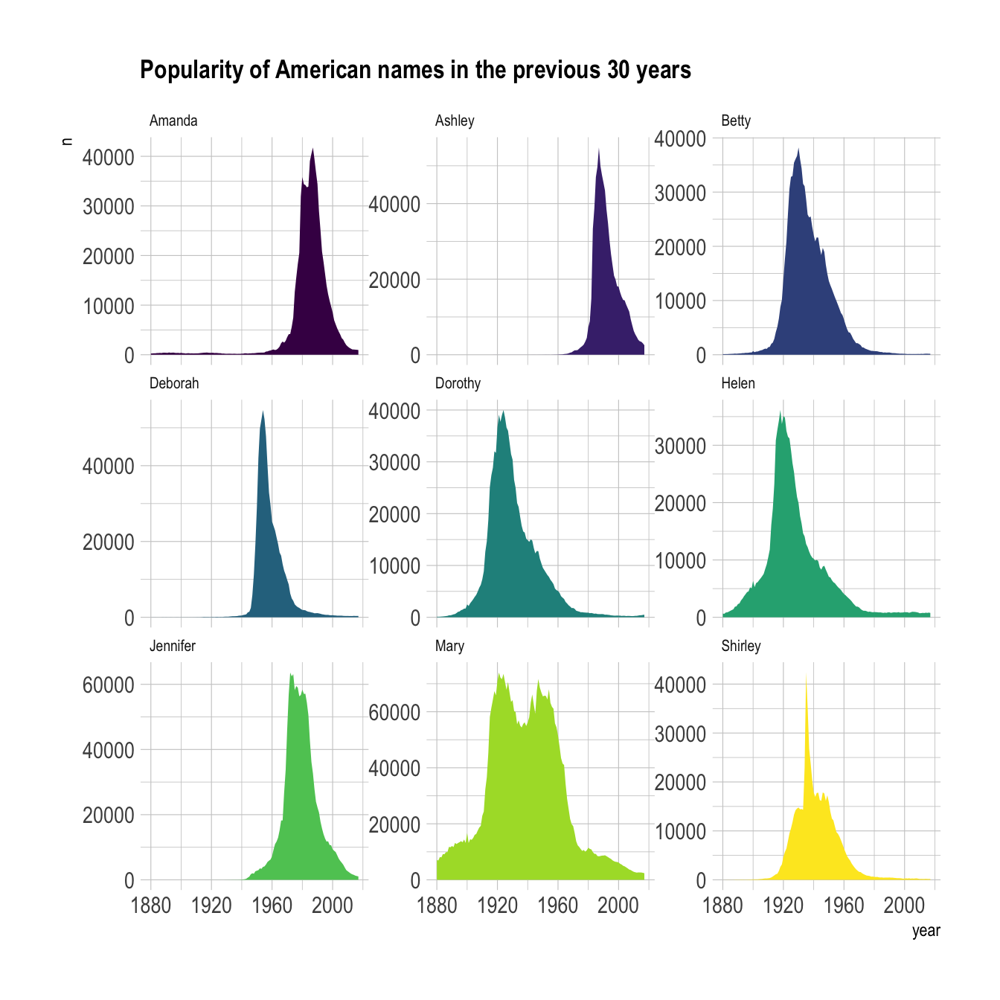
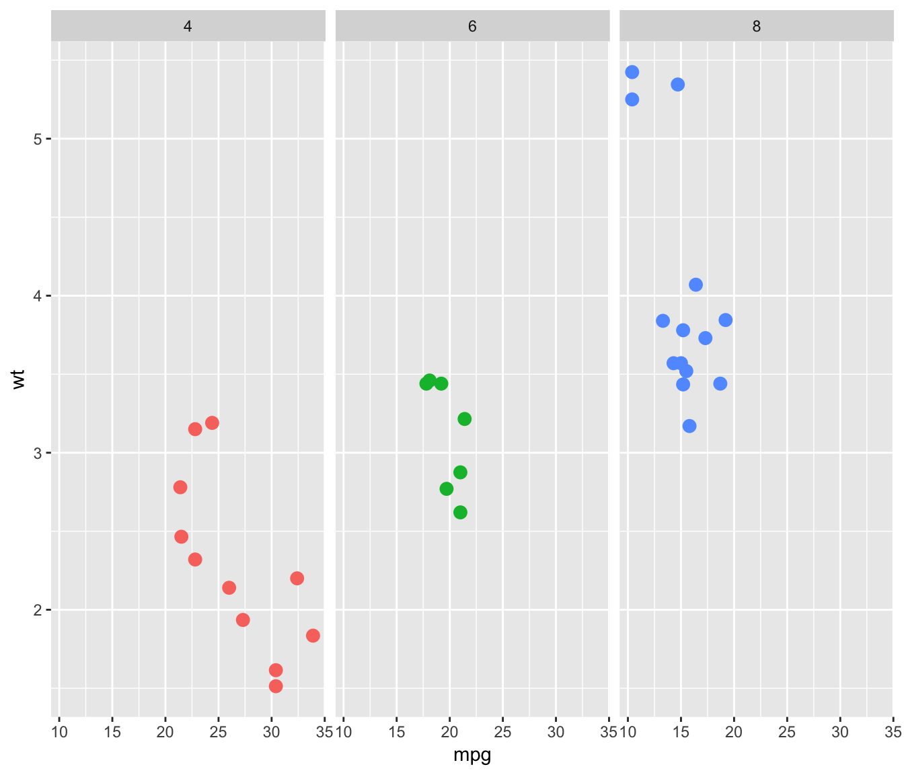
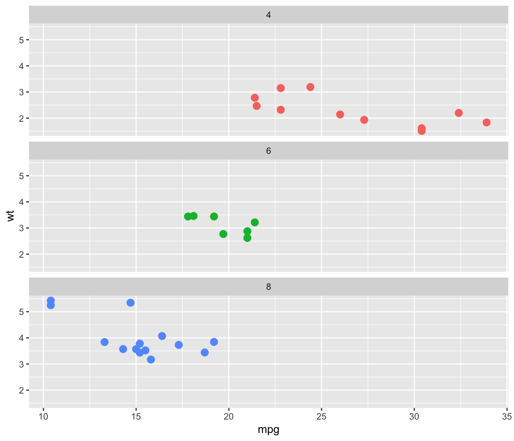
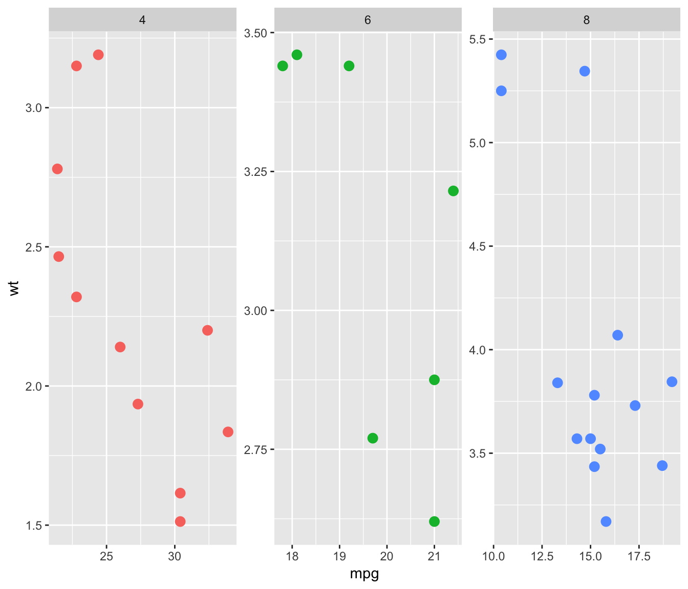
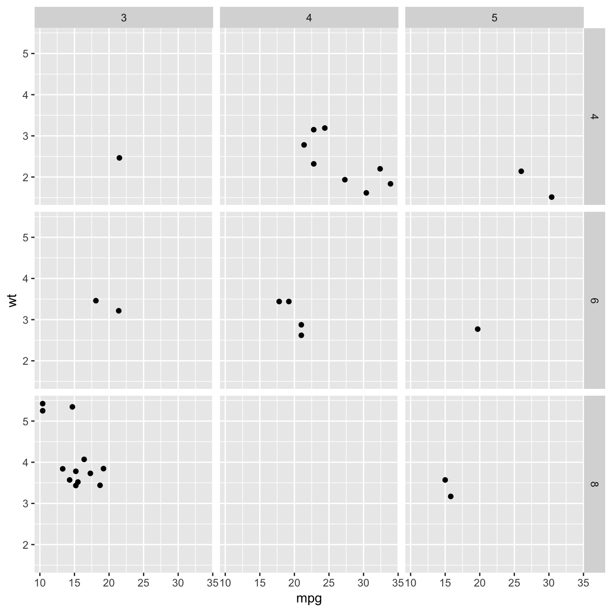

What is small multiple
Faceting is the process that split the chart window in several small parts (a grid), and display a similar chart in each section. Each section usually shows the same graph for a specific group of the dataset. The result is usually called small multiple.
It is a very
powerful technique
in data visualization, and a major advantage of using
ggplot2 is that it offers functions allowing to build
it in a single line of code. Here is an example showing the
evolution of a few baby names in the US. (source)

# Libraries
library(tidyverse)
library(hrbrthemes)
library(babynames)
library(viridis)
# Load dataset from github
data <- read.table("https://raw.githubusercontent.com/holtzy/data_to_viz/master/Example_dataset/3_TwoNumOrdered.csv", header=T)
data$date <- as.Date(data$date)
# Load dataset from github
don <- babynames %>%
filter(name %in% c("Ashley", "Amanda", "Mary", "Deborah", "Dorothy", "Betty", "Helen", "Jennifer", "Shirley")) %>%
filter(sex=="F")
# Plot
don %>%
ggplot( aes(x=year, y=n, group=name, fill=name)) +
geom_area() +
scale_fill_viridis(discrete = TRUE) +
theme(legend.position="none") +
ggtitle("Popularity of American names in the previous 30 years") +
theme_ipsum() +
theme(
legend.position="none",
panel.spacing = unit(0, "lines"),
strip.text.x = element_text(size = 8),
plot.title = element_text(size=13)
) +
facet_wrap(~name, scale="free_y")
Faceting with facet_wrap()




facet_wrap() is the most common function for faceting with
ggplot2. It builds a new chart for each level of a
categorical variable. You can add the charts horizontally (graph1) or
vertically (graph2, using dir="v"). Note that if
the number of group is big enough, ggplot2 will
automatically display charts on several rows/columns.
The grey bar showing the related level can be placed on top or on the
bottom thanks to the strip.position option (graph3).
Last but not least, you can choose whether every graph have the same
scale or not with the scales option (graph4).
# library & datset
library(ggplot2)
head(mtcars)
# Split by columns (default)
ggplot( mtcars , aes(x=mpg, y=wt, color=as.factor(cyl) )) +
geom_point(size=3) +
facet_wrap(~cyl) +
theme(legend.position="none")# Split by row
ggplot( mtcars , aes(x=mpg, y=wt, color=as.factor(cyl) )) +
geom_point(size=3) +
facet_wrap(~cyl , dir="v") +
theme(legend.position="none")# Add label at the bottom
ggplot( mtcars , aes(x=mpg, y=wt, color=as.factor(cyl) )) +
geom_point(size=3) +
facet_wrap(~cyl , strip.position="bottom") +
theme(legend.position="none")# Use same scales for all
ggplot( mtcars , aes(x=mpg, y=wt, color=as.factor(cyl) )) +
geom_point(size=3) +
facet_wrap(~cyl , scales="free" ) +
theme(legend.position="none")facet_grid()
facet_grid() is the second function allowing to build
small multiples with ggplot2. It allows to build one
chart for each combinations of 2 categorical variables. One variable
will be used for rows, the other for columns.
The two variables must be given around a ~, the first
being displayed as row, the second as column. The
facet-grid() function also accepts the
scales argument described above.
